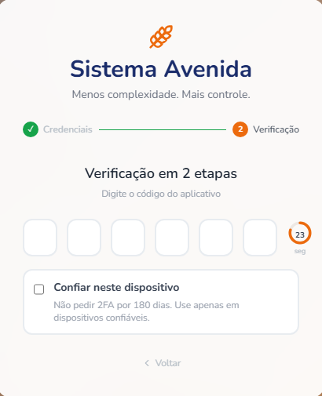

The problem
A password is a single point of failure. It can be stolen through phishing, reused from another breached service, or simply guessed. For applications handling customer data, relying on a password alone is no longer enough. Multi-factor authentication solves that problem, but different MFA methods offer very different trade-offs in security, user experience, and implementation.
What MFA actually is
Authentication is proving who you are. Every proof falls into one of three factor categories:
- Something you know — a password, a PIN.
- Something you have — a phone, a hardware key, a device that holds a secret.
- Something you are — a fingerprint, a face.
Multi-factor authentication means requiring proofs from different categories. A password plus a security question is not MFA — both are things you know, and both leak the same way (phishing, database dumps, sticky notes). A password plus a one-time code from a device the attacker doesn't have is MFA: stealing the password is no longer enough on its own.
The alternatives
"Something you have" can mean several different things in practice:
- SMS codes — simple for users, but vulnerable to SIM-swapping and dependent on a carrier network the app doesn't control.
- Push-based approval (tap "yes" in an app) — smooth UX, but it ties you to a proprietary vendor and infrastructure.
- Hardware keys / passkeys (WebAuthn) — the strongest option against phishing, but a heavier lift for users who'd need to own and carry a physical key or set up platform biometrics.
- TOTP (Time-based One-Time Password) — a code generated locally on a device, no network round-trip, no vendor lock-in.
Digging into TOTP, the detail that settled it was that it isn't a proprietary scheme — it's an open standard, RFC 6238, already implemented by every mainstream authenticator app. Users don't need to install anything specific to this product; whatever authenticator app they already trust just works.
The decision: TOTP
TOTP won on three counts: it requires no SMS carrier or push-notification vendor to trust, it works offline once enrolled, and — because it's a standard rather than a proprietary protocol — users get to pick their own authenticator app instead of being locked into one.
The trick that lets two parties agree on a code without communicating is simple: they share a secret once, during enrollment, and after that they both derive codes independently from the same two inputs — the secret and the current time, rounded down to a 30-second window. Run the same standard math on the same inputs, and both sides land on the same 6-digit code, without a single byte crossing the network at verification time.
The security assumption is exactly one thing: the shared secret never leaves the two parties. The time is public; the algorithm is public; the code is useless after 30 seconds.
One practical wrinkle: clocks drift. If a phone's clock is a little behind the server's, it may still be showing the code for the previous time step. The standard accounts for this by accepting a small window of adjacent steps, so a few seconds of drift doesn't lock anyone out.
The UX
Implementing the algorithm was the easy part — the harder design questions were about the experience around it. Nobody enjoys typing a 6-digit code under a countdown, and the difference between a second factor people tolerate and one they resent lives entirely in interaction details, not in the math.
The screen actually changes shape depending on where the user is in that lifecycle, and the two states are worth looking at side by side.
Enrollment happens exactly once, the first time a user turns MFA on. The QR code encodes the shared secret, so it has to be there — this is the one moment the secret exists outside the two parties that will need it later. Once the authenticator app has scanned it and the user proves the setup worked with one valid code, the QR code is never shown again for that account; there's nothing left to scan.

Verification is what every login after that looks like — no QR code, because there's nothing left to provision. What's new here instead is the ring next to the input counting down the seconds left in the current code's validity window. That countdown isn't decorative: it's the direct, visible expression of the 30-second time step the RFC 6238 math is built on, and it's what turns "why didn't my code work" into "the ring hit zero, of course it didn't." A user watching the ring learns, without being told, that waiting for the next code is sometimes faster than re-typing the current one.

None of that happens by accident — a handful of small, deliberate UX features are doing the work of making a security prompt feel like a two-second formality instead of a chore. Worth calling out explicitly:
- Time-left indicator. The code is only valid for a 30-second window; showing a visible countdown (rather than letting a code silently expire) is what turns a confusing "invalid code" error into an expected, self-explained state.
- Auto-advance between boxes. Typing a digit in box 1 moves focus to box 2 automatically — the user never touches Tab, and the six boxes read as one field split for legibility, not six separate fields to manage.
- Backspace steps back. Deleting an empty box moves focus to the previous one, so correcting a mistyped digit doesn't require reaching for the mouse.
- Autosubmit on the sixth digit. There's no separate "verify" button to click — filling the last box submits the code immediately. A TOTP code has exactly one valid length; waiting for an explicit submit click is a wasted round trip the UI doesn't need to ask for.
- Trust this device. A checkbox, off by default, that skips the second factor on that same browser for a bounded window (180 days) once checked — a deliberate trade-off between friction and security. A stolen password alone still isn't enough on an untrusted device, but a user isn't punished with a fresh code prompt every time they log in from their own laptop.
None of that is TOTP-specific — it's the same input-ergonomics thinking that goes into a credit-card CVV field or an SMS-code field anywhere else on the web. The algorithm earns you a secure second factor; this list is what earns you one people don't route around.
Under the hood
Enrollment safety came first: if a user starts setting up their authenticator app and closes the page before finishing, they must never end up locked out of their own account by a half-registered second factor. Enrollment is only considered complete once the user proves the app is working by submitting one valid code — until then, login behaves exactly as it did before MFA was introduced.
The second design question was how login communicates its own state. Rather than returning a simple yes/no, it reports what needs to happen next — whether the user still needs to enroll, needs to enter a TOTP code, or is already fully authenticated. That's a finite state machine in disguise: a small, fixed set of states with defined transitions between them, and the login handler is the single place that decides the current one. Every other surface that consumes login just reacts to whichever state it's handed, instead of re-deriving the rules for when a second factor is required. The frontend types make that contract explicit:
export type LoginNextStep = 'TOTP_SETUP_REQUIRED' | 'TOTP_REQUIRED' | 'AUTHENTICATED';
export interface LoginResponse {
user_name?: string;
next_step: LoginNextStep;
csrf_token?: string; // present only when next_step === 'AUTHENTICATED'
}
export interface TOTPVerificationRequest {
totp_code: string;
trust_device?: boolean; // optional: trust this device for N days
}
export interface TOTPVerificationResponse {
user_name: string;
next_step: 'AUTHENTICATED';
csrf_token: string;
}That csrf_token riding along on AUTHENTICATED is a separate concern from TOTP itself — what CSRF is and how it's defended against is covered here.
The backend mirrors that same three-state contract with an enum rather than a string union, so both sides of the wire are working off the same finite set of outcomes:
class LoginFlowStep(StrEnum):
"""Login flow response steps (what the client should do next)."""
TOTP_SETUP_REQUIRED = "TOTP_SETUP_REQUIRED"
TOTP_REQUIRED = "TOTP_REQUIRED"
AUTHENTICATED = "AUTHENTICATED"The login handler walks a short, ordered chain to decide which of the three it returns: if MFA isn't enabled for the account, straight to AUTHENTICATED; if the user has never completed enrollment, TOTP_SETUP_REQUIRED; if the browser isn't on the trusted-device list, TOTP_REQUIRED; otherwise, the device is already trusted and login falls through to AUTHENTICATED without ever prompting for a code. Every consumer of login — the web app today, anything else later — gets the same three-way answer instead of re-deriving this logic itself.
What "trust this device" actually persists
Checking that box does two things: it drops a device_id cookie in the browser, and it writes a matching row server-side. The cookie itself is just a random token — the server never trusts the raw value on its own, only its hash:
def generate_device_cookie() -> str:
return secrets.token_urlsafe(32)
def compute_fingerprint(device_cookie: str) -> str:
return hashlib.sha256(device_cookie.encode()).hexdigest()Only that hash is persisted, alongside an expiry — so a leaked database dump gives an attacker nothing that reverses into a working cookie. On every later login, the same fingerprint gets re-derived from whatever cookie the browser presents and checked against that record; a match with an unexpired window is what lets a login fall through to AUTHENTICATED without ever prompting for a code, and anything else routes back to TOTP_REQUIRED.
The outcome
The result is a second factor that costs users almost nothing after the first setup: no SMS fees, no dependency on a third-party push service, no proprietary app requirement, and — thanks to trusted devices — no repeated friction on machines they already use daily. Security only asserts itself when it matters: a new device, a new browser, or a password that's been compromised.